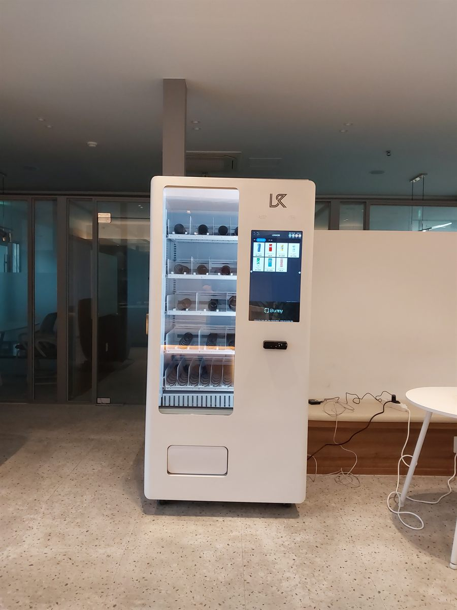

사무실에서 자판기 문의가 오는 이유는 대개 탕비실을 만들 자리가 없어서입니다. 냉장고와 정수기, 컵과 싱크대를 갖추려면 최소 한 칸이 필요한데 임대료를 생각하면 그 한 칸이 아깝고, 만들어 두면 누가 채우고 누가 치우느냐가 다시 일이 됩니다. 그래서 요즘은 라운지 벽면 한 자리에 기계 한 대로 끝내는 곳이 늘었습니다. 폭 한 걸음이면 들어가고, 채우는 일은 정해진 날에 한 번이면 됩니다.
이번 현장은 회의실 유리벽과 라운지 테이블 사이에 기둥이 하나 서 있던 자리였습니다. 먼저 본 것은 동선입니다. 기둥 옆은 원래 지나가기만 하던 죽은 공간이라, 기계를 붙여도 통로가 좁아지지 않습니다. 반대로 회의실 문 정면이나 복도 한가운데는 사람이 멈춰 서면 바로 막히는 자리라 피했습니다. 다음은 바닥과 전원입니다. 테라조 타일 바닥은 눈으로는 평평해 보여도 줄눈을 따라 미세한 단차가 있어 수평을 다시 잡고 바퀴를 잠갔습니다. 냉장 기계는 상시 전원이라 사무 기기가 물린 회로에 겹치지 않게 콘센트를 따로 잡고, 선은 벽을 타고 내려 의자 바퀴에 걸리지 않게 정리했습니다. 유리벽 바로 앞은 냉기가 모여 결로가 생기기 쉬워 한 뼘 띄워 세웠습니다.
오산 사무실 휴게실에 맞는 구성
품목은 직원이 실제로 집는 것만 남기는 쪽이 낫습니다. 생수와 커피, 탄산, 이온음료를 넓게 잡고 남은 칸에 과자·견과·에너지바 정도를 채웠습니다. 사무실은 손님을 받는 자리가 아니라 같은 사람이 매일 오는 자리라, 종류를 늘리는 것보다 잘 나가는 몇 가지를 끊기지 않게 두는 편이 만족도가 높습니다. 처음 한 달은 판매 기록을 보고 안 나가는 칸을 잘 나가는 품목으로 바꿔 나갑니다. 회사가 일부를 부담해 복지처럼 쓰는 곳도 있고, 전액 직원 부담으로 두고 운영만 맡기는 곳도 있습니다.
결제는 신용·체크카드와 삼성페이·카카오페이·네이버페이를 받습니다. 사무실은 현금함을 두지 않는 쪽을 권해 드립니다. 동전을 채워 두면 잔돈이 막혔다는 이야기가 반드시 나오고, 그때마다 누군가 기계를 열어야 합니다. 카드와 간편결제만 받으면 관리자가 할 일은 채우는 것 하나로 줄어듭니다. 칸별 재고와 시간대별 판매는 휴대폰 앱에서 봅니다. 총무 담당자가 출근길에 앱만 한 번 열어 보면 어느 칸이 비었는지 알 수 있어, 채우러 가는 날을 미리 잡을 수 있습니다.
사무실 휴게실, 좋은 점과 어려운 점
좋은 점은 수요가 예측된다는 것입니다. 상가 자판기는 오늘 몇 명이 지날지 알 수 없지만 사무실은 인원이 정해져 있어, 한두 주만 지나면 하루에 몇 개가 나가는지 거의 고정됩니다. 재고를 남기거나 모자라게 할 일이 적습니다. 관리 부담도 작습니다. 실내라 비바람과 직사광선을 타지 않고, 취객이나 파손 걱정도 없습니다. 무엇보다 탕비실을 안 만들어도 됩니다. 냉장고·정수기·싱크대와 그 공간을 치우는 사람까지 계산하면, 기계 한 대가 자리도 손도 훨씬 덜 듭니다.
어려운 점도 그대로 말씀드립니다. 주말과 휴가철에는 거의 안 나갑니다. 사무실은 사람이 있어야 팔리는 자리라 연휴가 길면 며칠씩 매출이 없고, 대신 그만큼 재고도 안 줄어듭니다. 상가처럼 24시간 회전을 기대하면 실망하실 수 있습니다. 소음도 보셔야 합니다. 냉장 압축기가 도는 소리는 조용한 사무실에서 생각보다 크게 들려, 집중해서 일하는 자리나 회의실 바로 옆보다는 한 칸 떨어진 라운지 쪽이 맞습니다. 가격 저항도 있습니다. 편의점이 걸어서 가까운 건물이라면 몇백 원 차이에도 사람이 그쪽으로 가므로, 가격을 편의점 근처로 맞추거나 회사가 일부를 부담하는 방식이 결국 회전을 만듭니다.
오산 무인매장, 이런 자리가 잘 됩니다
오산은 면적에 비해 사람과 일자리가 촘촘하게 모인 도시입니다. 경부선 1호선이 도시를 가로질러 오산역·오산대역·세마역이 이어지고, 역세권을 따라 상가와 사무실이 층층이 들어서 있습니다. 시청과 관공서가 모인 오산동·원동 일대, 그리고 궐동은 오래된 중심 상권이라 사무실 휴게실과 학원·스터디카페 문의가 꾸준합니다. 대학이 가까운 청학동과 양산동 쪽은 원룸과 자취 수요가 겹쳐 원룸촌 자판기와 PC방·코인노래연습장 성격의 자리가 자주 나옵니다.
세교동 일대는 결이 다릅니다. 신도시로 개발되면서 아파트 단지와 상가가 한꺼번에 생겨 단지 상가와 오피스텔 로비 설치가 많고, 새 건물이라 전원과 반입 경로가 깨끗해 작업이 수월한 편입니다. 가장동과 누읍동·벌음동 쪽은 산업단지와 중소 사업장이 이어지는 구역이라 공장 휴게실·기숙사 성격의 설치가 들어옵니다. 교대 근무가 도는 곳은 매점이 닫힌 시간대에 자판기만 남으므로 회전이 특히 빠릅니다. 수청동 물향기수목원 주변과 지곶동 독산성 일대는 주말 방문객이 있는 자리라 냉장 음료 중심으로 잡습니다. 오산역 환승센터처럼 기다리는 시간이 생기는 자리도 자판기 성격에 잘 맞습니다.
오산 서비스 지역
오산동 · 원동 · 궐동 · 부산동 · 초평동 · 세교동 · 갈곶동 · 청학동 · 수청동 · 은계동 · 내삼미동 · 외삼미동 · 세마동 · 지곶동 · 서랑동 · 누읍동 · 가장동 · 벌음동
역 — 오산역 · 오산대역 · 세마역 · 오산역 환승센터
인접한 화성 · 평택 · 용인 · 수원 · 안성까지 같은 조건으로 나갑니다.
오산 무인창업, 이렇게 시작하시면 됩니다
설치비는 받지 않습니다. 자리 확인부터 품목 구성, 기계 반입, 카드 결제 연동, 재고 채우는 방법까지 한 번에 안내해 드립니다. 사무실은 직원이 일하는 시간에 기계를 들이면 서로 불편하므로, 점심시간이나 업무 시작 전으로 반입을 잡습니다. 사무실이 2층 이상이라면 출입문 폭과 엘리베이터 크기, 콘센트 위치 세 가지를 먼저 확인하고 견적을 냅니다. 화물용 엘리베이터가 없는 건물은 계단 폭과 꺾이는 각도까지 보고 들어갈 수 있는 크기를 정합니다. 한 대로 시작해 반응을 보고 옆에 한 대를 더 붙이는 방식도 많이 하십니다.
비용은 구입이 렌탈보다 유리한 편입니다. 렌탈료를 몇 년 내는 것보다 처음에 사 두는 쪽이 총액이 낮게 나오는 경우가 많고, 사무실처럼 자리를 옮기지 않고 오래 쓰는 곳일수록 차이가 벌어집니다. 구성별 36개월 총비용은 구입 vs 렌탈 비교 가이드에 정리해 두었습니다.
오산 무인자판기 설치 상담
세워 둘 자리 사진 한 장만 보내 주셔도 됩니다. 남는 벽 길이와 콘센트, 반입 경로를 보고 어떤 크기가 맞을지 먼저 봐 드린 뒤 견적을 보내 드립니다.
※ 사진은 픽포스가 시공한 설치 사례이며, 글에 적힌 지역의 현장 사진은 아닙니다. 자판기 구성과 품목은 자리와 업종에 따라 달라지며, 사무실·휴게실 설치는 남는 벽 길이와 반입 경로, 전원 위치를 현장에서 먼저 확인합니다. 정확한 금액은 견적서로 안내드립니다.